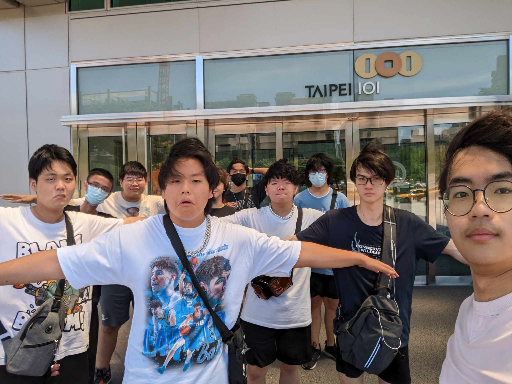
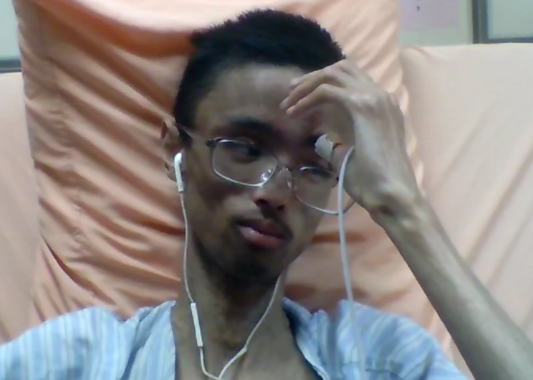

夢開始的地方
陳品佑
2004/8/20-2025/12/23
親愛的陳品佑先生:
我早上起來還是一樣在和你的聊天室看著聊天紀錄，不曉得你現在吃了沒、睡了沒，我只想跟你說一聲，我們很想你，我們愛你。
Chapter 集結

在2018年的暑假，品佑在Minecrft伺服器遇見了秉謙，就此故事開始了
之後通過秉謙也認識岳辰、希宥、立澄等摯友
並在2022年的跨年，也是祂最開心的一次跨年(最左比讚人為品佑)
Chapter 出遊
他的愛好除了打遊戲、看影片，更多的就是和朋友們出門。
在2022年的暑假，品佑也和大家計畫出門，而他最喜歡行程絕對就是進KTV裡面和大家歌唱。
(上影片為2022暑假眾人合唱影片，錄影人為品佑)
當初第一次一起烤肉時，永遠記得你那時喝的爛醉的樣子。

在2023年的暑假，是第二次大家集體上北部玩4天，名為[台北行]
雖然當時你因為太累沒跟到行程，不過大家在結束時，所有人都很想念這4天
Chapter 凋零

自從台北行之後，你的身體狀況急轉直下，從原先的肺積水到後來心臟衰竭，一次都比一次悽慘
但能出院時你都能和我們打遊戲和出去玩，即便你說想結束，但後來還是堅持了下來
不過這一次真的不行了，但是大家都知道你受了什麼苦，所以這次，我們只好說再見了
SAY GOODBYE
從Minecraft開始，再到鬥陣特攻、虹彩六號、ROBLOX、英雄聯盟的你，不單單只是一位朋友
而是一個在我們大家生命之中那一顆閃耀的星，即使你現在已不再，關於你的回憶都在我們心中記下
希望在下一世，你可以有一副健康的好身體，下輩子，希望我們來世可以再當好麻吉，下輩子要快樂、沒煩惱、不痛苦的活著
我們愛您，珍重再見
-江秉謙 2025/12/28著